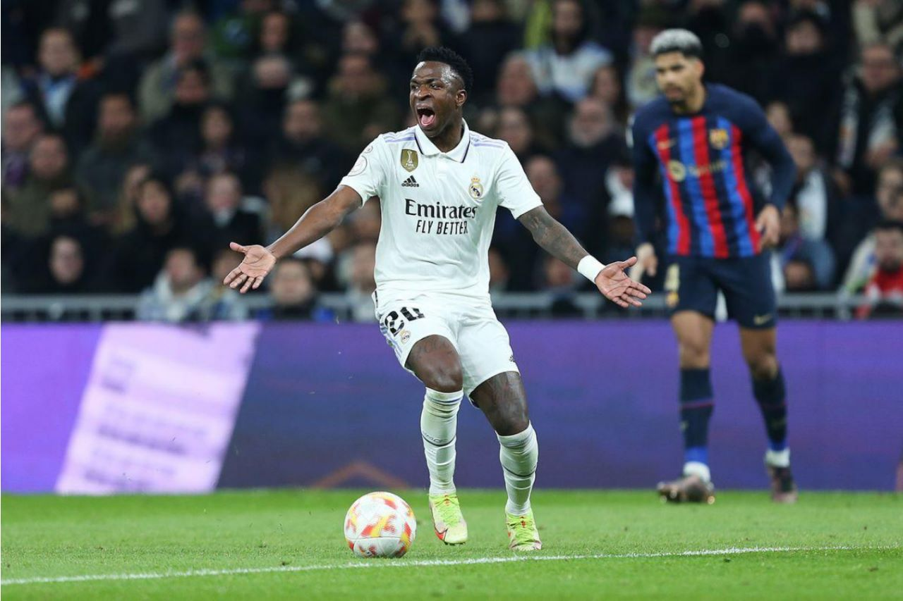
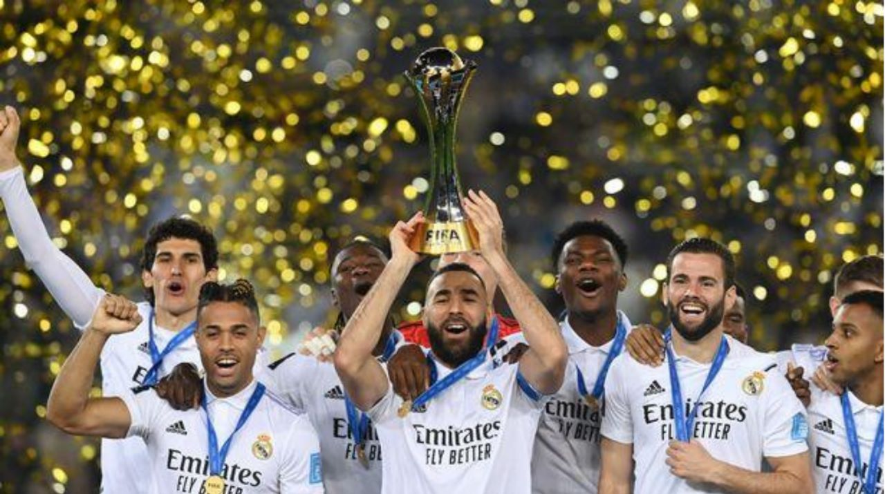
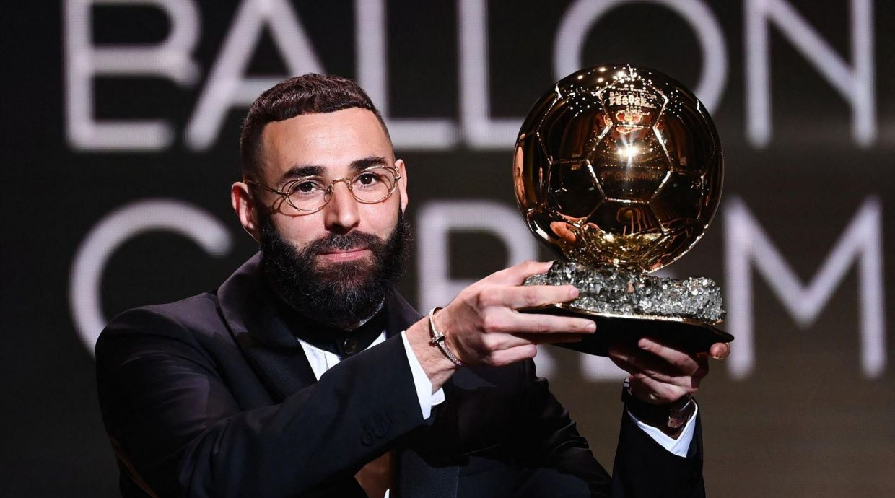

Copa Del Rey Semi-Final second leg set for April 5
Real Madrid and our rivals Barcelona will battle it out in the second leg of the Copa Del Rey semi-final on Wednsday April 5 at 10:00 p.m. The other semi-final game will be Osasuna against Athletico Madrid. Currently Navana leads with one goal against them. The results for this semi-final match up will be resolved on Tuesday April 4th at 10:00pm. The winners of each matchup will compete in the final May 6 at stadium “La Cartuja” in Seville
Real Madrid won it’s 8th FIFA Club World Cup
Real Madrid won the final against Saudi Arabian club “Al Hilal at a score of 5-3 in Rabat, Morocco. This clinches their 8th Club World Cup in their club history. This adds to the collection of wins they had in 1960, 1998, 2002, 2014, 2016, 2017 and 2018. This makes our club the unmatched record holder for amount of World Cup wins. Vinicius Jr takes the golden ball, meanwhile Valverde takes the silver one. Besides that, Vinicius Jr was named player of the tournament due to his amazing performances throughout the games.
Benzema wins Ballon D’or 2022
Our team captain was named the best football player of the year. After years of mainly Ronaldo and Messi competing for who gets the Ballon D’or the majority of the time, it is time for Benzema to get some recognition for the amazing player he is. He scored a total of 44 goals and was essential in winning the Champions League, LaLiga title, and the Copa Del Rey during the 2021/2022 season. Following an amazing season, he was awarded the Ballon D’or in which the gala was hosted in Paris. He came ahead of Sadio Mane, Kevin De Bruyne, and and Robert Lewandoski in a vote that was carried by 180 different journalists. Benzema in response of receiving the award stated “Holding this trophy is such an honour, it's a childhood dream come true. It's an individual award, but a team one too, and I think this is the Ballon d'Or of the people. Thank you to all of Madrid, to the players, because without them this would have been impossible, to the fans for always motivating me to give my best on the pitch, and to the president as well”